Welcome to August 2026. This month our structure has reached Level 53, bringing the rooftop "crown" into clearer view. Beyond the project's own progress, Pattaya continues to draw attention from around the world — so this issue rounds up the city's key updates for you: the ฿72-billion EECiti infrastructure plan, U-Tapao's Demand-Driven aviation city strategy, and a candid look at where the high-speed rail stands. We'll also take you deep into the latest smart-home trends and health techniques through VO2 Max training. But this issue's real highlight isn't concrete or technology — it's "thought" itself. In an age when AI and algorithms shape more of our lives, we believe a good quality of life begins with quality of thought. This piece is an invitation for all of us to think it through together, and arrive at clarity. ยินดีต้อนรับสู่เดือนสิงหาคม 2569 เดือนนี้โครงสร้างอาคารของเราเดินทางมาถึงชั้น 53 แล้ว ทำให้เริ่มมองเห็น "มงกุฎ" บนชั้นดาดฟ้าได้ชัดเจนยิ่งขึ้น นอกเหนือจากความคืบหน้าของโครงการ พัทยายังคงได้รับความสนใจจากทั่วโลกอย่างต่อเนื่อง ในฉบับนี้เราจึงรวบรวมอัปเดตสำคัญรอบเมืองมาให้คุณ ทั้งแผนโครงสร้างพื้นฐาน EECiti มูลค่า 7.2 หมื่นล้านบาท, กลยุทธ์ Demand-Driven ของเมืองการบินอู่ตะเภา ไปจนถึงมุมมองตรงไปตรงมาเกี่ยวกับทิศทางของรถไฟความเร็วสูง นอกจากนี้ เราจะพาคุณไปเจาะลึกเทรนด์สมาร์ทโฮมยุคใหม่ และเทคนิคดูแลสุขภาพผ่านการฝึก VO2 Max แต่ไฮไลท์สำคัญของฉบับนี้ไม่ได้อยู่ที่เรื่องคอนกรีตหรือเทคโนโลยี — ทว่าคือเรื่อง "ความคิด" ในยุคที่ AI และอัลกอริทึมเข้ามามีบทบาทกับชีวิต เพราะเราเชื่อว่าคุณภาพชีวิตที่ดีเริ่มต้นจากคุณภาพความคิด บทความนี้จึงอยากชวนทุกคนมาร่วมตกผลึกและคิดให้ตกผลึกไปด้วยกัน 欢迎来到2026年8月。本月，我们的大楼主体结构已升至第53层，楼顶"王冠"轮廓愈发清晰可见。除了项目本身的进展，芭提雅持续吸引全球目光。本期，我们为您汇总了这座城市的重要动态：价值720亿泰铢的EECiti基础设施计划、乌塔堡航空城的需求驱动（Demand-Driven）策略，以及对高铁未来走向的坦诚解读。此外，我们还将带您深入了解最新智能家居趋势，以及通过VO2 Max训练照顾健康的方法。但本期真正的焦点，并非混凝土或科技——而是"思维"本身。在AI与算法日益融入生活的时代，我们相信良好的生活品质始于优质的思维品质。这篇文章，正是想邀请每一位读者一起沉淀思考，让思绪逐渐清晰。 Добро пожаловать в август 2026 года. В этом месяце наша башня достигла уровня 53, и корона на крыше становится всё более различимой. Помимо собственного прогресса проекта, Паттайя продолжает привлекать внимание всего мира — поэтому в этом выпуске мы собрали для вас главные новости города: план инфраструктуры EECiti на ฿72 млрд, стратегию У-Тапао по реальному спросу (Demand-Driven) для авиагорода и честный взгляд на то, куда движется скоростная железная дорога. Мы также подробно расскажем о последних трендах умного дома и о том, как тренировка VO2 Max помогает заботиться о здоровье. Но главный акцент этого выпуска — не бетон и не технологии, а само "мышление". В эпоху, когда ИИ и алгоритмы всё больше влияют на нашу жизнь, мы верим, что хорошее качество жизни начинается с качества мышления. Эта статья — приглашение подумать вместе и прийти к ясности.
The Rapport Paradox, the algorithm's comfortable prison, and how to think with AI instead of simply believing it — our biggest Mind Wellness feature yet. Rapport Paradox คุกแสนสบายของอัลกอริทึม และวิธี "คิดไปพร้อมกับ AI" แทนที่จะเชื่อมันทั้งหมด — บทความ Mind Wellness ที่ครบเครื่องที่สุดของเรา 共情悖论、算法的舒适监狱，以及如何"与AI一起思考"而非全盘相信它——我们迄今最全面的思维健康专题。 Парадокс раппорта, уютная тюрьма алгоритма и как думать вместе с ИИ, а не просто верить ему — наш самый масштабный материал о здоровье мышления.
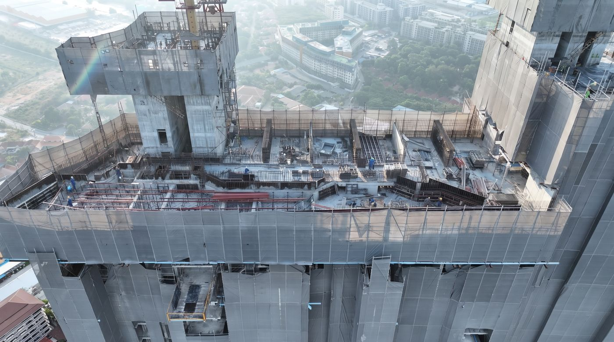
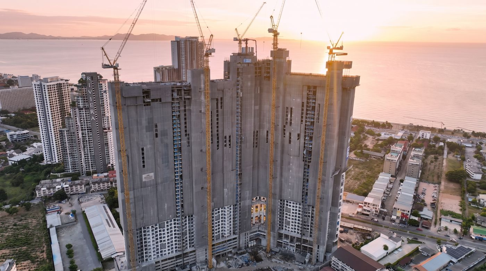
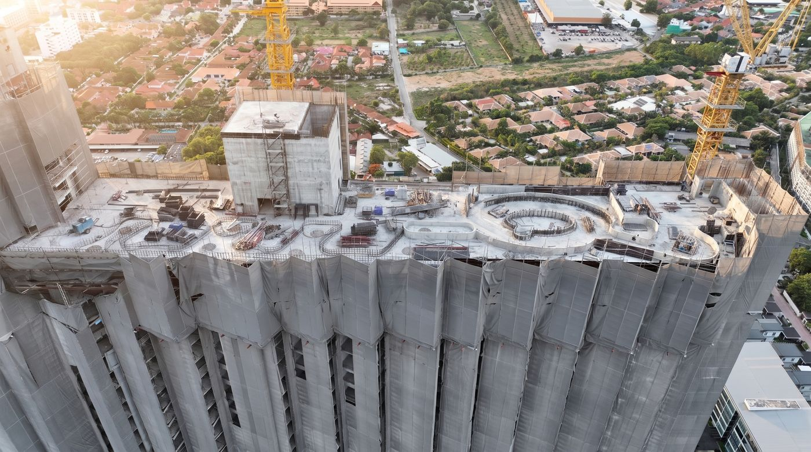
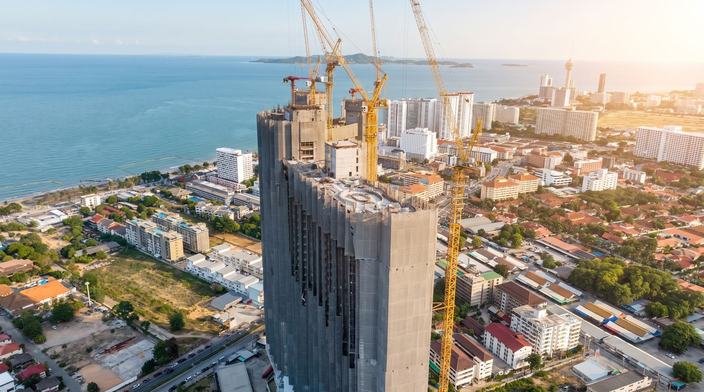
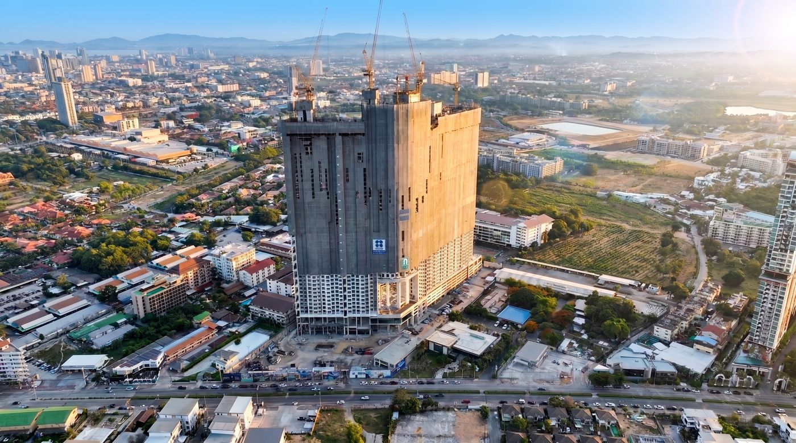
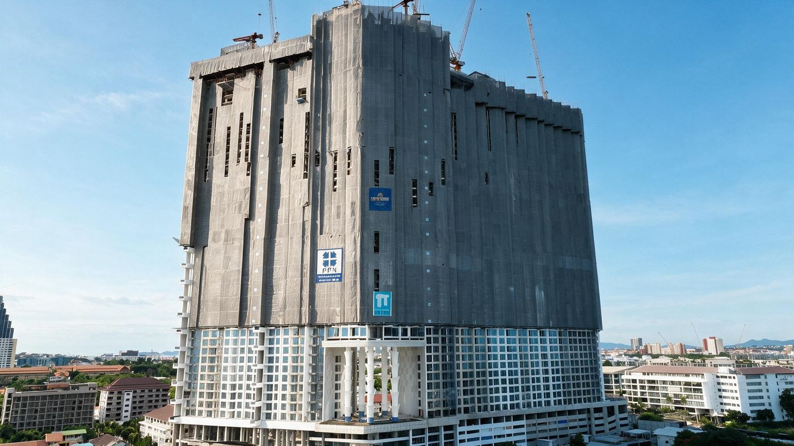
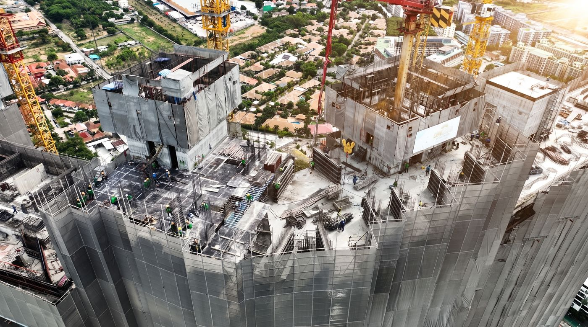
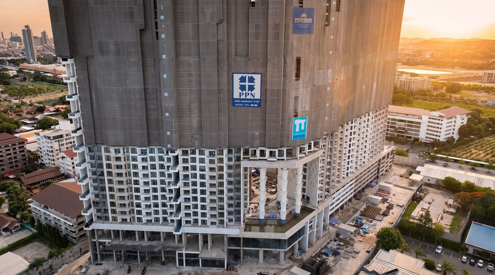
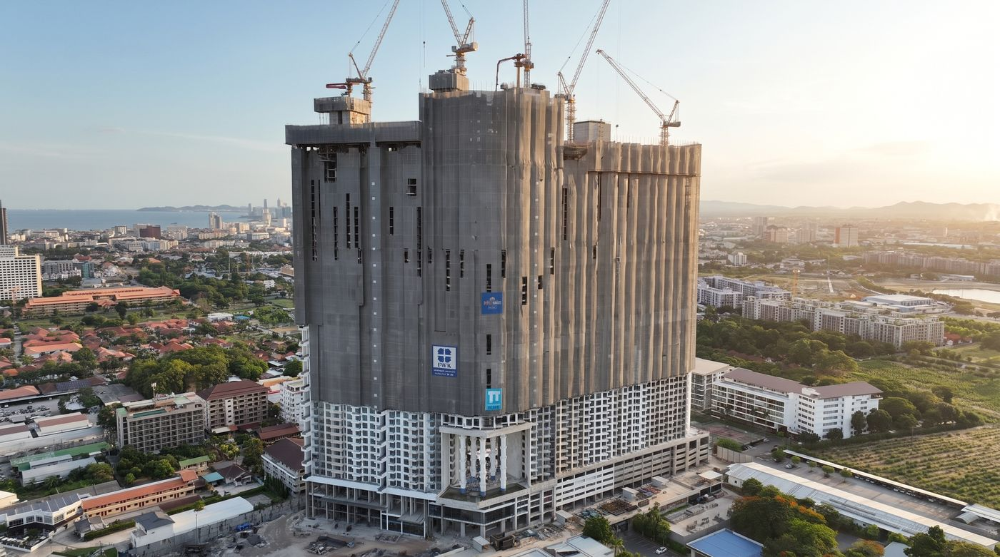
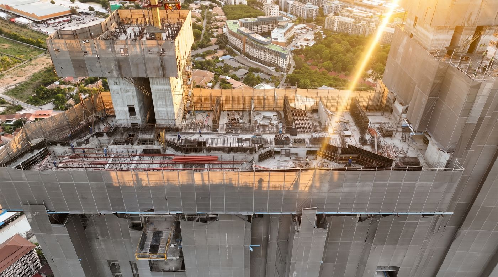
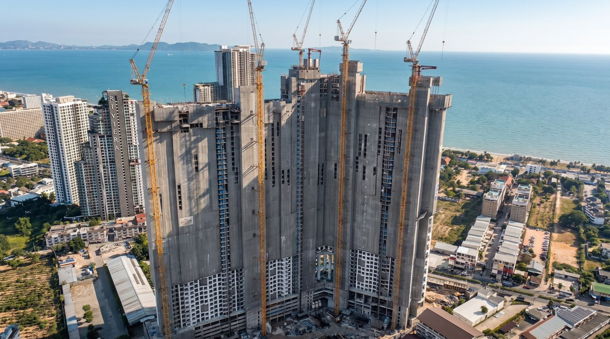
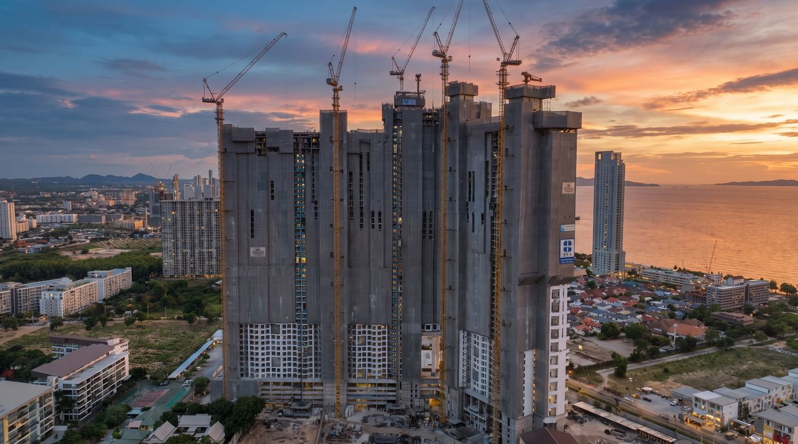
One day on site — sunrise to blue hour · hover to pause · click any photo to enlarge หนึ่งวันในไซต์ก่อสร้าง — รุ่งอรุณถึงพลบค่ำ · ชี้เมาส์เพื่อหยุด · คลิกรูปเพื่อขยาย 工地的一天——从日出到蓝调时刻 · 悬停暂停 · 点击图片放大 Один день на стройке — от рассвета до синего часа · наведите, чтобы остановить · нажмите, чтобы увеличить
Floor by floor, the silhouette of Copacabana Coral Reef Jomtien is completing itself on the skyline. Our long-standing partner Pornpranakorn Co., Ltd. now steers the project toward the ceremonial Topping Off in November 2026.
ชั้น 53 — นับถอยหลังสู่มงกุฎ: โครงสร้างหลักของอาคารก้าวขึ้นสู่ชั้นที่ 53 อย่างเป็นทางการ ซึ่งเป็นชั้นพักอาศัยระดับบนสุด โดยถัดขึ้นไปคือชั้นดาดฟ้าที่จะรังสรรค์ให้เป็นซิกเนเจอร์ที่โดดเด่นที่สุดของโครงการ:ทีละชั้น ซิลูเอตต์ของ Copacabana Coral Reef Jomtien กำลังปรากฏชัดสมบูรณ์ขึ้นบนเส้นขอบฟ้าเมืองพัทยา โดยพันธมิตรคู่ใจ บริษัท พรพระนคร จำกัด (Pornpranakorn) กำลังนำโครงการมุ่งสู่พิธี Topping Off ในเดือนพฤศจิกายน 2569 อย่างมั่นคง
第53层 — 冲顶倒计时：大楼主体结构已正式升至第53层——最顶端的住宅楼层。再往上，便是即将承载项目最具标志性签名的楼顶层：一层一层，Copacabana Coral Reef Jomtien的轮廓正日益完整地跃然于芭提雅天际线之上。我们的长期合作伙伴Pornpranakorn Co., Ltd.正带领项目稳步迈向2026年11月的封顶仪式。
Уровень 53 — Обратный отсчёт до короны: Основная конструкция официально поднялась до 53-го уровня — верхних жилых этажей. Прямо над ними — крыша, которая станет самой знаковой подписью проекта:Этаж за этажом силуэт Copacabana Coral Reef Jomtien обретает завершённость на горизонте Паттайи. Наш надёжный партнёр Pornpranakorn Co., Ltd. ведёт проект к торжественной церемонии Topping Off в ноябре 2026 года.
Beyond factories and FDI headlines, the EEC's next chapter is about daily life — how residents of this coast will move, live and breathe over the next decade. มองข้ามพาดหัวเรื่องโรงงานและเม็ดเงินลงทุน — บทต่อไปของ EEC คือชีวิตประจำวัน: ผู้อยู่อาศัยบนชายฝั่งนี้จะเดินทาง ใช้ชีวิต และหายใจอย่างไรในทศวรรษข้างหน้า 超越工厂与外资的新闻标题，EEC的下一章关乎日常生活——这片海岸的居民在未来十年将如何出行、生活与呼吸。 За заголовками о заводах и инвестициях — следующая глава EEC о повседневной жизни: как жители этого побережья будут перемещаться, жить и дышать в ближайшее десятилетие.


Two flagship additions are moving from concept to feasibility: an international-standard sports complex (feasibility study due by August 2026) and a "World Class Entertainment & Leisure Hub." Paired with the Net Zero target and a planned population of ~350,000, EECiti is positioning itself as a full lifestyle destination, not just an industrial support zone. แผนงาน flagship เพิ่มเติมอีก 2 โครงการกำลังเดินหน้าจากแนวคิดสู่การศึกษาความเป็นไปได้: ศูนย์กีฬาระดับนานาชาติ (ผลศึกษา feasibility คาดแล้วเสร็จภายในเดือนสิงหาคม 2569) และ "World Class Entertainment & Leisure Hub" เมื่อรวมกับเป้าหมาย Net Zero และประชากรที่วางแผนไว้ราว 350,000 คน EECiti กำลังวางตำแหน่งตัวเองเป็นจุดหมายไลฟ์สไตล์เต็มรูปแบบ ไม่ใช่แค่โซนสนับสนุนอุตสาหกรรม 两大旗舰项目正从概念阶段迈入可行性研究：国际标准体育综合体（可行性研究预计2026年8月前完成）以及"World Class Entertainment & Leisure Hub"世界级娱乐休闲中心。结合净零排放目标与约35万规划人口，EECiti正将自身定位为完整的生活方式目的地，而不仅仅是产业配套区。 Два флагманских проекта переходят от концепции к технико-экономическому обоснованию: спортивный комплекс международного уровня (ТЭО ожидается к августу 2026) и «World Class Entertainment & Leisure Hub». Вместе с целью Net Zero и планируемым населением ~350 000 человек EECiti позиционирует себя как полноценное направление для жизни, а не просто промышленную зону поддержки.
Source: posttoday.com → แหล่งที่มา: posttoday.com → 来源：posttoday.com → Источник: posttoday.com →
The ฿218–290 billion Eastern Aviation City (6,500 rai) is no longer waiting on the high-speed rail to reach full scale — it has shifted to a demand-driven build, trimming Phase 1 capacity to roughly 3 million passengers a year (from 6 million). Bangkok Airways is investing a further ฿2 billion to hold its 40% stake in developer UTA; Thai Airways is pushing ahead with a ฿13-billion MRO facility on 210 rai; and a second runway is already under construction. The EEC board has also cleared incentive measures — tax breaks for foreign airlines, an EECa visa, a free-trade zone — now headed to Cabinet. โครงการเมืองการบินภาคตะวันออก มูลค่า 218-290 พันล้านบาท (พื้นที่ 6,500 ไร่) ไม่รอรถไฟความเร็วสูงเต็มรูปแบบอีกต่อไป โดยปรับเป็นกลยุทธ์ Demand-Driven ลด capacity เฟสแรกเหลือประมาณ 3 ล้านผู้โดยสารต่อปี (จากแผนเดิม 6 ล้าน) ขณะที่ Bangkok Airways อนุมัติลงทุนเพิ่ม 2,000 ล้านบาท เพื่อรักษาสัดส่วน 40% ใน UTA การบินไทยเดินหน้าโครงการ MRO มูลค่า 13,000 ล้านบาท บนพื้นที่ 210 ไร่ และรันเวย์ที่ 2 เริ่มก่อสร้างแล้ว บอร์ด EEC ยังไฟเขียวมาตรการจูงใจ — ลดภาษีสายการบินต่างชาติ, EECa Visa, เขต Free Trade Zone — ซึ่งกำลังส่งเข้า ครม. 东部航空城项目（价值2,180亿至2,900亿泰铢，占地6,500莱）不再等待高铁全面建成，已转向需求驱动模式，将一期运力从原计划的600万人次/年下调至约300万人次/年。曼谷航空追加投资20亿泰铢，以维持其在开发商UTA中40%的股权；泰国国际航空正推进价值130亿泰铢、占地210莱的MRO飞机维修基地；第二条跑道已开工建设。EEC董事会同时批准了多项激励措施——外国航空公司税收减免、EECa签证、自由贸易区——目前正提交内阁审议。 Проект Eastern Aviation City стоимостью ฿218–290 млрд (6 500 раев) больше не ждёт полноценной высокоскоростной ж/д — стратегия изменена на модель по спросу: мощность Фазы 1 снижена примерно до 3 млн пассажиров в год (с 6 млн). Bangkok Airways инвестирует ещё ฿2 млрд, чтобы сохранить 40% в девелопере UTA; Thai Airways продвигает MRO-центр за ฿13 млрд на 210 раях; уже строится вторая взлётная полоса. Совет EEC также одобрил меры стимулирования — налоговые льготы для иностранных авиакомпаний, визу EECa, зону свободной торговли — сейчас на рассмотрении Кабинета министров.
Source: posttoday.com → แหล่งที่มา: posttoday.com → 来源：posttoday.com → Источник: posttoday.com →The ฿225-billion three-airport rail link (Don Mueang–Suvarnabhumi–U-Tapao) hit its most serious setback yet: in early July 2026, CP Group's Asia Era One filed to end the joint-venture contract, citing an inability to secure financing amid stalled BOI promotion status. The State Railway of Thailand must present the EEC board two options by August 2026 — amend the contract, or terminate it, potentially replacing the project with a medium-speed (160 km/h) rail line instead. We'll report the outcome as soon as it's decided. รถไฟความเร็วสูงเชื่อม 3 สนามบิน (ดอนเมือง-สุวรรณภูมิ-อู่ตะเภา) มูลค่า 2.25 แสนล้านบาท เจอความท้าทายครั้งใหญ่ที่สุด: ต้นเดือนกรกฎาคม 2569 กลุ่มซีพี (Asia Era One) ยื่นหนังสือขอสิ้นสุดสัญญาร่วมทุน โดยอ้างว่าหาแหล่งทุนไม่ได้ เนื่องจากปัญหาบัตรส่งเสริม BOI รฟท. ต้องเสนอ 2 ทางเลือกให้บอร์ด EEC พิจารณาภายในเดือนสิงหาคม 2569 — แก้ไขสัญญา หรือยุติสัญญา ซึ่งอาจปรับเป็นรถไฟความเร็วปานกลาง 160 กม./ชม. แทน เราจะติดตามผลสรุปและรายงานให้ทราบทันที 总投资2,250亿泰铢的三机场高铁（廊曼–素万那普–乌塔堡）遭遇迄今最严重的挫折：2026年7月初，正大集团旗下的Asia Era One申请终止合资合同，理由是因BOI投资促进资格受阻而无法获得融资。泰国国家铁路局须在2026年8月前向EEC董事会提出两个选项——修订合同，或终止合同（可能改为时速160公里的中速铁路替代）。一旦有最终结果，我们将第一时间报道。 Скоростная железная дорога, связывающая три аэропорта (Дон Мыанг–Суварнабхуми–У-Тапао), стоимостью ฿225 млрд, столкнулась с самой серьёзной проблемой: в начале июля 2026 года Asia Era One (группа CP) подала заявку на расторжение контракта СП, сославшись на невозможность привлечь финансирование из-за проблем со статусом поддержки BOI. Государственные железные дороги Таиланда должны представить совету EEC два варианта к августу 2026 года — изменить контракт или расторгнуть его, возможно заменив проект на среднескоростную (160 км/ч) линию. Мы сообщим об итогах, как только решение будет принято.
Source: bangkokbiznews.com → แหล่งที่มา: bangkokbiznews.com → 来源：bangkokbiznews.com → Источник: bangkokbiznews.com →PM Anutin has taken direct command of the EEC board, stripping the Deputy PM of his supervisory role to personally accelerate approvals and court foreign capital. In parallel, the board has approved Prachinburi in principle as a fourth EEC province, alongside continued focus on target industries — next-generation automotive, digital, medical and BCG. Two open questions worth watching: how Chinese investment inflows are screened, and how "nominee" land-holding rules are enforced as the zone expands. นายกฯ อนุทิน เข้ามาคุมบอร์ด EEC ด้วยตนเองโดยตรง ถอดอำนาจกำกับดูแลจากรองนายกฯ เพื่อเร่งอนุมัติโครงการและดึงเม็ดเงินลงทุนต่างชาติ ควบคู่กันบอร์ดได้เห็นชอบในหลักการให้ปราจีนบุรีเป็นจังหวัดที่ 4 ของพื้นที่ EEC พร้อมเดินหน้าอุตสาหกรรมเป้าหมายต่อเนื่อง — ยานยนต์สมัยใหม่ ดิจิทัล การแพทย์ และ BCG ประเด็นที่ยังต้องจับตา: การคัดกรองเม็ดเงินลงทุนจากจีน และการบังคับใช้กฎเรื่องที่ดิน nominee เมื่อพื้นที่ EEC ขยายตัว 阿努廷总理已亲自接管EEC董事会，撤销副总理的监管职责，以加快项目审批并亲自招揽外资。与此同时，董事会原则上批准将巴真武里府纳入EEC第四个府，并持续聚焦目标产业——新一代汽车、数字经济、医疗及BCG（生物-循环-绿色经济）。两大值得关注的问题：中国投资流入的审查机制，以及随着特区扩张，"代持"土地规则的执行力度。 Премьер-министр Ануттин лично возглавил совет EEC, отстранив вице-премьера от надзорной роли, чтобы ускорить одобрения и лично привлекать иностранный капитал. Параллельно совет в принципе одобрил включение Прачинбури в качестве четвёртой провинции EEC, продолжая фокус на целевых отраслях — автомобили нового поколения, цифровые технологии, медицина и BCG. Два открытых вопроса, за которыми стоит следить: как проверяются китайские инвестиционные потоки и как будут применяться правила о «номинальном» владении землёй по мере расширения зоны.
Source: bangkokbiznews.com → แหล่งที่มา: bangkokbiznews.com → 来源：bangkokbiznews.com → Источник: bangkokbiznews.com →The CES 2026 verdict is in: the smart home has stopped waiting for commands. Here are the four shifts arriving in the next 24 months that will redefine what modern living means — trends worth watching for every homeowner. บทสรุปจากเวที CES 2026 ชัดเจน: สมาร์ทโฮมยุคใหม่ไม่รอคำสั่งอีกต่อไป นี่คือ 4 ความเปลี่ยนแปลงที่จะมาถึงภายใน 24 เดือนข้างหน้า ซึ่งกำลังนิยามการอยู่อาศัยยุคใหม่ทั้งหมด — เทรนด์ที่เจ้าของบ้านทุกคนควรจับตามอง CES 2026的结论已经明确：智能家居不再等待指令。以下是未来24个月内到来的四大变革，它们将重新定义现代居住的含义——值得每一位业主关注的趋势。 Вердикт CES 2026 однозначен: умный дом больше не ждёт команд. Вот четыре сдвига ближайших 24 месяцев, которые переопределят современную жизнь — тренды, за которыми стоит следить каждому владельцу жилья.
Please note: This content presents future smart-home technology trends for information only. The devices and systems mentioned are not part of the standard unit specification and are not included with purchased units. Owners may choose to install them separately at their own discretion. หมายเหตุ: เนื้อหานี้เป็นการนำเสนอ "เทรนด์เทคโนโลยีสมาร์ทโฮมแห่งอนาคต" เพื่อเป็นข้อมูลเท่านั้น — อุปกรณ์และระบบที่กล่าวถึง ไม่ได้เป็นส่วนหนึ่งของมาตรฐานห้องชุด และทางโครงการไม่ได้แถมมาพร้อมยูนิตที่ซื้อ เจ้าของห้องสามารถเลือกติดตั้งเพิ่มเติมได้เองตามความต้องการ 请注意：本内容仅为未来智能家居技术趋势的资讯介绍。文中提及的设备与系统不属于交付住宅的标准配置，也不随所购单元附赠。业主可根据自身需求自行选购安装。 Обратите внимание: данный материал представляет тренды технологий умного дома исключительно в информационных целях. Упомянутые устройства и системы не входят в стандартную комплектацию и не предоставляются с приобретаемыми юнитами. Владельцы могут установить их самостоятельно по своему усмотрению.

The universal standard has won: locks, sensors, lights and appliances from any brand now speak one language over low-power Thread mesh — no more choosing between Alexa, Apple or Google. Buy once, works with everything. มาตรฐานสากลชนะแล้ว: กลอนประตู เซ็นเซอร์ ไฟ และเครื่องใช้ไฟฟ้าจากทุกแบรนด์คุยกันด้วยภาษาเดียวผ่านเครือข่าย Thread พลังงานต่ำ — ไม่ต้องเลือกข้างระหว่าง Alexa, Apple หรือ Google อีกต่อไป ซื้อครั้งเดียว ใช้ได้กับทุกระบบ 通用标准已成定局：任何品牌的门锁、传感器、灯具和家电，都能通过低功耗Thread网状网络说同一种语言——无需再在Alexa、Apple或Google之间站队。一次购买，全面兼容。 Универсальный стандарт победил: замки, датчики, свет и техника любых брендов говорят на одном языке через энергоэффективную сеть Thread — больше не нужно выбирать между Alexa, Apple и Google.

2026-generation systems process your schedule, sleep patterns, indoor climate and even energy prices simultaneously — pre-cooling the bedroom before you arrive, dimming for your wind-down hour, securing the unit when it senses you've left for the airport. ระบบเจเนอเรชัน 2026 ประมวลผลตารางชีวิต รูปแบบการนอน สภาพอากาศในห้อง และแม้แต่ราคาค่าไฟไปพร้อมกัน — ทำความเย็นห้องนอนล่วงหน้าก่อนคุณกลับถึง หรี่ไฟรับช่วงเวลาพักผ่อน และล็อกห้องอัตโนมัติเมื่อรู้ว่าคุณออกเดินทางไปสนามบินแล้ว 2026世代的系统可同时处理您的日程、睡眠模式、室内气候乃至电价——在您到家前预冷卧室，在您的放松时段调暗灯光，在感知您已出发去机场时自动布防。 Системы поколения 2026 одновременно обрабатывают ваш график, режим сна, микроклимат и даже цены на электричество — заранее охлаждают спальню, приглушают свет к вечеру и ставят квартиру на охрану, когда вы уехали в аэропорт.

CES 2026 marked the year home robots became genuinely useful: AI-navigation vacuums that handle whole floors autonomously, laundry robots that fold and stack, and compact companion bots that patrol, monitor air quality and greet guests. Ideal staff for a lock-up-and-leave sea residence. CES 2026 คือปีที่หุ่นยนต์ในบ้าน "ใช้งานได้จริง" เสียที: หุ่นยนต์ดูดฝุ่นนำทางด้วย AI ที่จัดการทั้งชั้นได้เอง หุ่นยนต์ซักรีดที่พับและจัดเรียงเสื้อผ้า ไปจนถึงหุ่นยนต์คู่ใจขนาดเล็กที่ลาดตระเวน ตรวจคุณภาพอากาศ และต้อนรับแขก — ผู้ช่วยในอุดมคติสำหรับบ้านพักตากอากาศริมทะเลที่คุณไม่ได้อยู่ตลอดปี CES 2026标志着家用机器人真正实用化的元年：AI导航扫地机器人可自主打理整层楼，洗衣机器人能折叠码放衣物，小型陪伴机器人则负责巡逻、监测空气质量和迎宾。对于"锁门即走"的海滨度假宅，它们是最理想的管家。 CES 2026 стал годом, когда домашние роботы стали по-настоящему полезны: пылесосы с ИИ-навигацией убирают этаж сами, роботы для стирки складывают бельё, а компактные роботы-компаньоны патрулируют, следят за воздухом и встречают гостей. Идеальный персонал для приморской резиденции, которую вы покидаете на месяцы.

The 2026 trend is orchestration: one AI brain managing air-conditioning, water heating and appliances against real-time tariffs. Fully integrated homes are already reporting utility savings of up to 30% — a number that matters for rental-yield investors as much as residents. เทรนด์ปี 2026 คือ "การอำนวยเพลง" ด้านพลังงาน: สมอง AI หนึ่งเดียวบริหารแอร์ เครื่องทำน้ำอุ่น และเครื่องใช้ไฟฟ้าตามค่าไฟแบบเรียลไทม์ บ้านที่เชื่อมระบบสมบูรณ์รายงานตัวเลขประหยัดค่าสาธารณูปโภคแล้วสูงสุดถึง 30% — ตัวเลขที่สำคัญทั้งกับผู้อยู่อาศัยและนักลงทุนปล่อยเช่า 2026年的趋势是"能源交响"：一个AI大脑根据实时电价统筹管理空调、热水与家电。全面集成的住宅已实现最高30%的水电费节省——这个数字对追求租金收益的投资者和住户同样重要。 Тренд 2026 года — оркестровка: один ИИ управляет кондиционерами, нагревом воды и техникой с учётом тарифов в реальном времени. Полностью интегрированные дома уже экономят до 30% на коммунальных платежах — цифра, важная и для жильцов, и для инвесторов.
For a holiday or investment home that stands empty for part of the year, these technologies are especially interesting: remote monitoring, self-managing climate and energy, and one open standard that lets owners add devices of any brand, at their own pace. For a deeper look at where AI-assisted living is heading, revisit our Hybrid AI feature from the June edition. สำหรับบ้านพักตากอากาศหรือบ้านเพื่อการลงทุนที่ไม่มีคนอยู่ตลอดทั้งปี เทคโนโลยีเหล่านี้น่าสนใจเป็นพิเศษ: การดูแลบ้านจากระยะไกล ระบบอากาศและพลังงานที่จัดการตัวเอง และมาตรฐานกลางแบบเปิดที่ให้เจ้าของเลือกเพิ่มอุปกรณ์แบรนด์ใดก็ได้ตามจังหวะของตัวเอง — อ่านมุมมองเชิงลึกเรื่องทิศทางของ AI กับการอยู่อาศัยเพิ่มเติมได้ในบทความ Hybrid AI ฉบับเดือนมิถุนายน 对于一年中部分时间无人居住的度假宅或投资房，这些技术尤其值得关注：远程看护、自我管理的气候与能源系统，以及让业主按自己的节奏自由添加任何品牌设备的开放统一标准。想深入了解AI辅助生活的未来方向，欢迎回顾我们六月刊的Hybrid AI专题。 Для дома у моря, который часть года пустует, эти технологии особенно интересны: удалённый мониторинг, самоуправляемые климат и энергия, а также открытый стандарт, позволяющий владельцу добавлять устройства любых брендов в своём темпе. Подробнее о будущем жизни с ИИ — в нашем материале Hybrid AI из июньского выпуска.
Trend sources: CES 2026 smart-home coverage · possiblefix.com · quantum-av.com แหล่งที่มาเทรนด์: รายงาน CES 2026 · possiblefix.com · quantum-av.com 趋势来源：CES 2026智能家居报道 · possiblefix.com · quantum-av.com Источники трендов: обзоры CES 2026 · possiblefix.com · quantum-av.com
We believe "quality of life" doesn't stop at choosing where to live — it extends to the quality of thinking behind every decision. In today's information deluge, algorithms and influencers win us over through emotion and "rapport" rather than facts — a phenomenon called The Rapport Paradox, where we quietly trust parasocial relationships more than neutral data. This is the era when critical thinking becomes essential: learning to think with AI, not simply believe it — so that humans remain the drivers of their own big decisions. เราเชื่อว่า "คุณภาพชีวิต" ไม่ได้หยุดอยู่แค่การเลือกที่อยู่อาศัย แต่ยังรวมถึง "คุณภาพของความคิด" ที่ใช้ในการตัดสินใจด้วย ในยุคที่ข้อมูลท่วมท้น (Information Deluge) อัลกอริทึมและอินฟลูเอนเซอร์มักดึงดูดเราด้วยอารมณ์และความรู้สึก "ผูกพัน" มากกว่าข้อเท็จจริง — ปรากฏการณ์ที่เรียกว่า The Rapport Paradox ทำให้เราเผลอเชื่อ "ความสัมพันธ์เสมือน" (Parasocial Relationships) มากกว่าข้อมูลที่เป็นกลาง นี่คือยุคที่ทักษะการคิดเชิงวิพากษ์กลายเป็นเครื่องมือที่จำเป็นที่สุด เพื่อให้เรา "คิดไปพร้อมกับ AI" แทนที่จะ "เชื่อ" AI ทั้งหมด และมั่นใจว่ามนุษย์ยังคงเป็นผู้ขับเคลื่อนการตัดสินใจครั้งสำคัญของตนเอง 我们相信，"生活品质"不止于选择住所，更包括每个决策背后的思维品质。在信息洪流的时代，算法和网红往往通过情绪与"共情连结"而非事实来赢得我们——这种被称为共情悖论（The Rapport Paradox）的现象，让我们不知不觉更相信"拟社会关系"而非中立数据。这是批判性思维成为必备技能的时代：学会与AI一起思考，而非全盘相信AI——确保人类始终是自己重大决策的驾驶员。 Мы верим, что «качество жизни» не заканчивается выбором жилья — оно включает качество мышления, стоящего за каждым решением. В эпоху информационного потопа алгоритмы и инфлюенсеры завоёвывают нас эмоциями и «раппортом», а не фактами — феномен The Rapport Paradox, из-за которого мы незаметно доверяем парасоциальным связям больше, чем нейтральным данным. Это эпоха, когда критическое мышление становится необходимым: учиться думать вместе с ИИ, а не просто верить ему, — чтобы человек оставался водителем своих главных решений.


Emotional feeds activate System 1 so your analytical System 2 gets bypassed.ฟีดกระตุ้นอารมณ์ปลุก System 1 จนสมองส่วนวิเคราะห์ (System 2) ถูกข้ามไป情绪化内容激活系统1，让分析性的系统2被绕过。Эмоциональная лента активирует Систему 1, обходя аналитическую Систему 2.
❤️ Trap 02 The Rapport Paradoxสมองเชื่อ "คน" ไม่ใช่ "ข้อมูล"大脑相信"人"而非"数据"Мозг верит «людям», не «данным»We weigh relationships over accuracy — influencers build trust through empathy, authenticity and similarity.เราให้น้ำหนัก "สายสัมพันธ์" มากกว่า "ความแม่นยำ" — อินฟลูเอนเซอร์สร้างความเชื่อใจผ่านความเข้าอกเข้าใจและความคล้ายคลึง我们更看重关系而非准确性——网红通过同理心、真实感和相似性建立信任。Мы ценим связь выше точности — инфлюенсеры строят доверие через эмпатию и сходство.
🔁 Trap 03 The Comfortable Prison"คุกแสนสบาย" ของอัลกอริทึม算法的"舒适监狱"«Уютная тюрьма» алгоритмаAlgorithms show what you want to see, sealing you in an echo chamber of your own beliefs.อัลกอริทึมเลือกโชว์แต่สิ่งที่คุณอยากเห็น ขังคุณไว้ใน "ห้องเสียงสะท้อน" ของความเชื่อเดิม算法只展示你想看的，把你封进自我信念的回音室。Алгоритм показывает желаемое, запирая вас в эхо-камере собственных убеждений.
🧠 Insight 04 AI as Brain Coachทางออกคือ "โค้ชฝึกสมอง" (AI)出路：AI"大脑教练"ИИ — тренер для мозгаUsed well, AI becomes a vaccine: a context co-pilot and coach that asks the questions you forgot to ask.หากใช้เป็น AI คือวัคซีน: ผู้ช่วยสืบค้นบริบทและโค้ชที่คอยตั้งคำถามที่เราลืมถาม善用之下，AI是疫苗：情境副驾驶与教练，替你提出你忘了问的问题。При верном подходе ИИ — вакцина: второй пилот и тренер, задающий забытые вами вопросы.
🐴 Trap 05 The New Trojan Horseเมื่อ "ยาถอนพิษ" กลายเป็นม้าโทรจัน当"解药"成为新木马Новый троянский коньAI is so useful we stop double-checking it — "instrumental trust" is the subtlest trap of all.AI มีประโยชน์จนเราหยุดตรวจสอบ — "ความเชื่อแบบเครื่องมือ" คือกับดักที่แยบยลที่สุดAI太有用了，以至于我们停止复核——"工具性信任"是最微妙的陷阱。ИИ так полезен, что мы перестаём его проверять — «инструментальное доверие» — самая тонкая ловушка.
"Be the Driver — not the Passenger — of your own thinking." "จงเป็น 'ผู้ขับเคลื่อน' ไม่ใช่ 'ผู้โดยสาร' ในกระบวนการคิดของตัวเอง" "做自己思维的'驾驶员'，而不是'乘客'。" «Будьте водителем — а не пассажиром — собственного мышления».
Read: Decode the 5 Brain Traps อ่านฉบับเต็ม: ถอดรหัส 5 กับดักสมอง 阅读全文：解码5个大脑陷阱 Читать: 5 ловушек мозга →

For the first time in Asia, the world's most famous festival brand lands at Wisdom Valley, Bang Lamung — 30 minutes from Jomtien. Add Wonderfruit and the Waterjet World Cup, and December 2026 becomes the busiest month our coast has ever seen. ครั้งแรกในเอเชียที่แบรนด์เฟสติวัลที่โด่งดังที่สุดในโลกเลือกจัดที่ Wisdom Valley อ.บางละมุง ห่างจากจอมเทียนเพียง 30 นาที บวกกับ Wonderfruit และ Waterjet World Cup — ธันวาคม 2569 จะเป็นเดือนที่คึกคักที่สุดในประวัติศาสตร์ชายฝั่งของเรา 全球最著名的音乐节品牌首次登陆亚洲，落户距中天海滩仅30分钟车程的邦拉蒙Wisdom Valley。再加上Wonderfruit和水上摩托世界杯，2026年12月将成为这片海岸有史以来最繁忙的月份。 Впервые в Азии самый знаменитый фестивальный бренд мира приходит в Wisdom Valley, Банг Ламунг — в 30 минутах от Джомтьена. Добавьте Wonderfruit и Кубок мира по аквабайку — и декабрь 2026 станет самым насыщенным месяцем в истории нашего побережья.

December 11–13, 2026 · Wisdom Valley, Chonburi
Dec 3–7 · The Fields, Siam Country Club
Wonderfruit 2026Five days of art, wellness, music and sustainable living — Thailand's most curated festival.5 วันแห่งศิลปะ สุขภาพ ดนตรี และวิถีชีวิตยั่งยืน — เฟสติวัลที่ประณีตที่สุดของไทย五天艺术、康养、音乐与可持续生活——泰国最精致的节日。Пять дней искусства, велнеса, музыки и осознанной жизни — самый изысканный фестиваль Таиланда.
Dec 9–13 · Jomtien Beach
WGP#1 Waterjet World CupWorld-championship waterjet racing directly on Jomtien Beach — right below your balcony.ศึกชิงแชมป์โลกเจ็ตสกีตรงหาดจอมเทียน — ใต้ระเบียงห้องคุณพอดี世界级水上摩托锦标赛就在中天海滩上演——就在您的阳台下方。Чемпионат мира по аквабайку прямо на пляже Джомтьен — под вашим балконом.
Dec 11–13 · Wisdom Valley
Tomorrowland Thailand50,000+ guests/day. No on-site camping — festival demand flows straight into Pattaya–Jomtien accommodation.ผู้ชม 50,000+ คน/วัน และไม่มีแคมป์ปิงในงาน — อุปสงค์ที่พักไหลเข้าพัทยา-จอมเทียนโดยตรง每天50,000+游客，现场不设露营——住宿需求将直接涌入芭提雅及中天地区。50 000+ гостей в день, кемпинга нет — спрос на жильё идёт напрямую в Паттайю и Джомтьен.
August blends grit and gratitude: a world-famous obstacle race in the hills, the nation dressed in blue for Mother's Day, and the silver screen lighting up the city. สิงหาคมคือเดือนที่ผสานความแข็งแกร่งเข้ากับความกตัญญู — ศึกวิ่งฝ่าด่านระดับโลกกลางขุนเขา ทั้งประเทศพร้อมใจสวมสีฟ้าในวันแม่แห่งชาติ และแสงจากจอภาพยนตร์ที่ส่องสว่างทั่วเมือง 八月融合了坚毅与感恩：山间的世界级障碍赛、全国身着蓝衣共庆母亲节，以及点亮全城的银幕之光。 Август сочетает силу и благодарность: всемирно известная гонка с препятствиями в холмах, страна в синем в честь Дня матери и большой экран, освещающий город.

Thailand's biggest obstacle-race weekend returns to Wisdom Valley: Sprint, Super and Beast in one weekend, plus the brutal 12-hour Hurricane Heat. Thousands of racers from across Asia — and a perfect warm-up lap for the venue that hosts Tomorrowland this December. สุดสัปดาห์แห่งการวิ่งฝ่าด่านที่ใหญ่ที่สุดในไทยกลับมาที่ Wisdom Valley: พิชิต Sprint, Super และ Beast ภายในสองวัน พร้อมรายการโหด Hurricane Heat 12 ชั่วโมง นักแข่งหลายพันคนจากทั่วเอเชียจะได้อุ่นเครื่องสนามเดียวกับที่จะจัด Tomorrowland ในเดือนธันวาคมนี้ 泰国最大的障碍赛周末重返Wisdom Valley：一个周末完成Sprint、Super与Beast三项，外加残酷的12小时飓风挑战。数千名来自亚洲各地的选手——也为12月举办Tomorrowland的场地提前热身。 Крупнейший уик-энд гонок с препятствиями возвращается в Wisdom Valley: Sprint, Super и Beast за одни выходные плюс суровый 12-часовой Hurricane Heat. Тысячи гонщиков со всей Азии — на той самой площадке, где в декабре пройдёт Tomorrowland.
📍 Wisdom Valley, Khao Mai Kaew, Bang Lamung
race.spartan.com →.png)
A national public holiday when Thailand turns blue in loving remembrance of Her Majesty Queen Sirikit The Queen Mother. Expect blue illuminations along Beach Road, merit-making and alms-giving ceremonies at temples citywide, and children honouring their mothers with jasmine garlands — the symbol of a mother's pure love. วันหยุดราชการที่คนไทยทั้งประเทศพร้อมใจประดับสีฟ้า เพื่อน้อมรำลึกในพระมหากรุณาธิคุณของสมเด็จพระนางเจ้าสิริกิติ์ พระบรมราชินีนาถ พระบรมราชชนนีพันปีหลวง ทั่วพัทยาจะมีการประดับไฟสีฟ้าตามถนนเลียบหาด พิธีทำบุญตักบาตรตามวัดต่างๆ และลูกๆ มอบพวงมาลัยดอกมะลิ สัญลักษณ์แห่งความรักอันบริสุทธิ์ของแม่ 这是泰国的法定假日，举国以蓝色缅怀诗丽吉王太后陛下。海滩路将亮起蓝色灯饰，全市寺庙举行功德法会和布施仪式，孩子们向母亲敬献茉莉花环——象征母爱的纯洁。 Государственный праздник, когда Таиланд одевается в синий в память о Её Величестве Королеве-матери Сирикит. Синяя иллюминация вдоль Beach Road, церемонии подношения в храмах по всему городу и жасминовые гирлянды — символ чистой материнской любви.
📍 Citywide · Beach Road illuminations & temple ceremonies
tourismthailand.org →
The city's growing identity as a creative-tourism destination takes center stage with screenings, public activities and citywide cinematic energy throughout August. A softer, atmospheric side of Pattaya — check official channels for the final programme and venues. บทบาทใหม่ของพัทยาในฐานะเมืองแห่งการท่องเที่ยวเชิงสร้างสรรค์จะเฉิดฉายตลอดเดือนสิงหาคม ทั้งการฉายภาพยนตร์ กิจกรรมสาธารณะ และพลังแห่งภาพยนตร์ทั่วเมือง — ติดตามโปรแกรมและสถานที่จัดฉายอย่างเป็นทางการได้จากช่องทางของเทศกาล 芭提雅作为创意旅游目的地的新身份将在八月全面绽放：电影放映、公共活动与弥漫全城的光影魅力。请通过官方渠道查询最终节目单与放映场地。 Растущая роль Паттайи как направления креативного туризма выходит на первый план: показы, публичные мероприятия и кинематографическая энергия по всему городу в течение августа. Финальную программу уточняйте на официальных каналах.
📍 Venues citywide · Pattaya City
ptyiff.com →
Copacabana Coral Reef Jomtien
385/16 Moo 12, Jomtien Second Road
Nong Prue, Bang Lamung, Chon Buri 20150
© 2026 Copacabana Coral Reef Jomtien. All rights reserved. © 2026 Copacabana Coral Reef Jomtien. สงวนสิทธิ์ทุกประการ © 2026 Copacabana Coral Reef Jomtien. 版权所有。 © 2026 Copacabana Coral Reef Jomtien. Все права защищены.